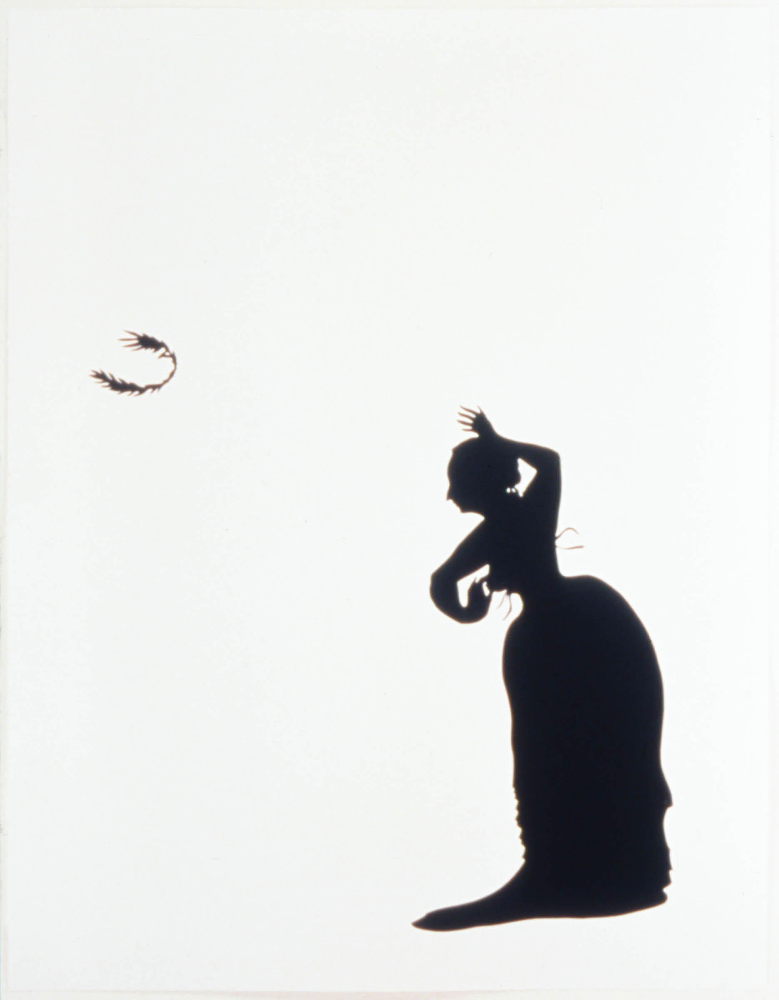
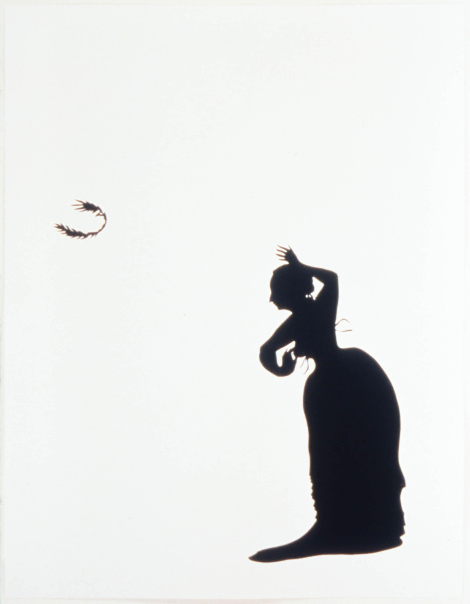
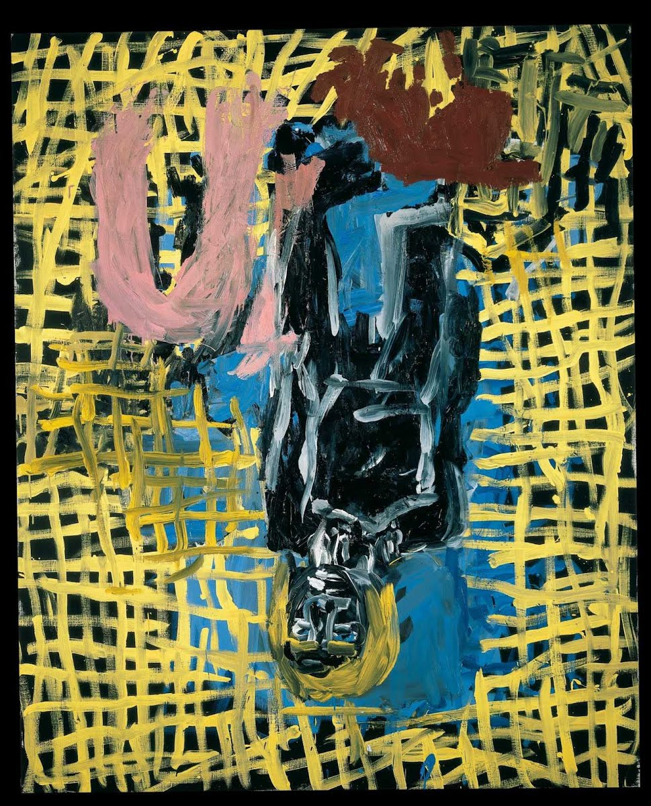
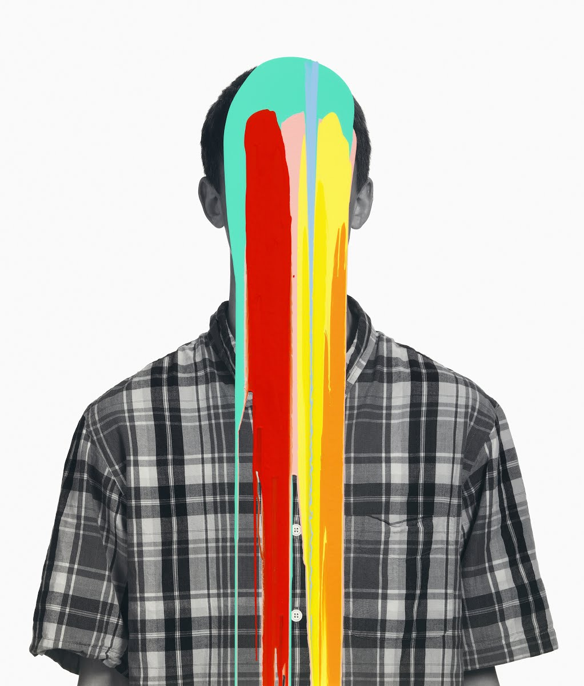
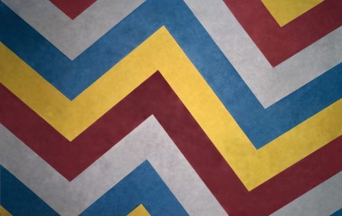
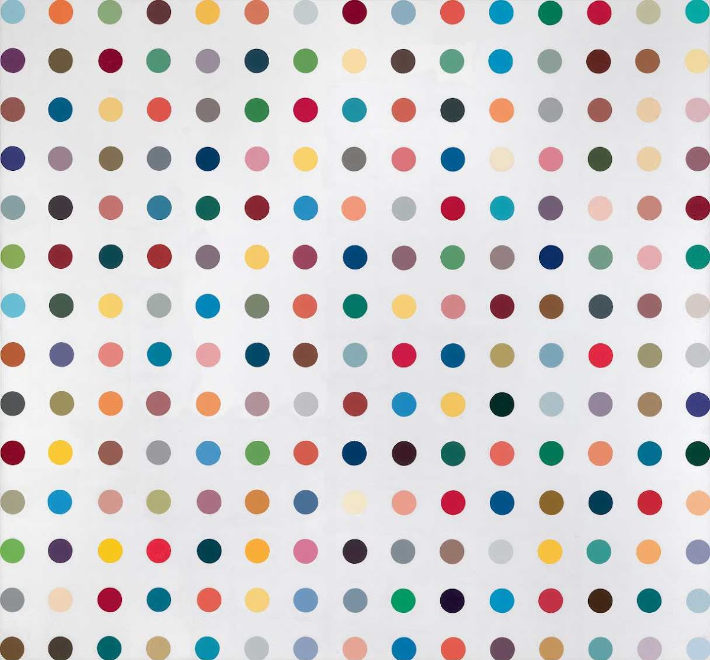

Juny 25, 2019
Visitors will admire the early paintings of such world famous painters as Neemiya Arbit Blatas, Max Band and Issai Kulvianski that are rarely exhibited, very few in numbers and represent the early Lithuanian period in the creative life of the artists.
 

Kara Walker utilizes the Victorian craft of black paper cutout to pose provocative questions about race in America. Beautiful and elegant, her silhouettes seduce with their simplicity and simultaneously highlight the way that stereotypes obscure complex histories. The Emancipation Approximation, a series of 27 screen prints, is an ironic interpretation of Abraham Lincoln's Emancipation Proclamation of 1863 that formally abolished slavery.

London, UK. 2 October 2018. A staff member views "Der Ausgang - Karl (The Exit - Karl)", 1987, by Georg Baselitz. Preview of "A Focus on the 1980s", an exhibition of works by Georg Baselitz at Galerie Thaddaeus Ropac in Mayfair.
Upon entering the Tate’s Turbine Hall, visitors to Eliasson’s The weather project were greeted by a huge glowing orb that hovered near the ceiling. A fine mist filled the hall, diffusing its spellbinding glow throughout the room.

These large-scale photographs take on the familiar format of high school yearbook portraits, yet seem to drip with paint; the identity of the sitter is masked so that he or she becomes an anonymous teen.

Solomon "Sol" LeWitt was the only child of Russian Jewish parents and was born and grew up in Connecticut. Conceptual art as explained by LeWitt is an intellectual, pragmatic act in which the idea itself could be the work of art.

In 1994 Damien Hirst was dicing with institutional sanction, between nomination for the Turner Prize (1993) and winning it (1995). He already occupied a senior position among a generation of young British artists distinctive enough to win the laurels of the definite article.